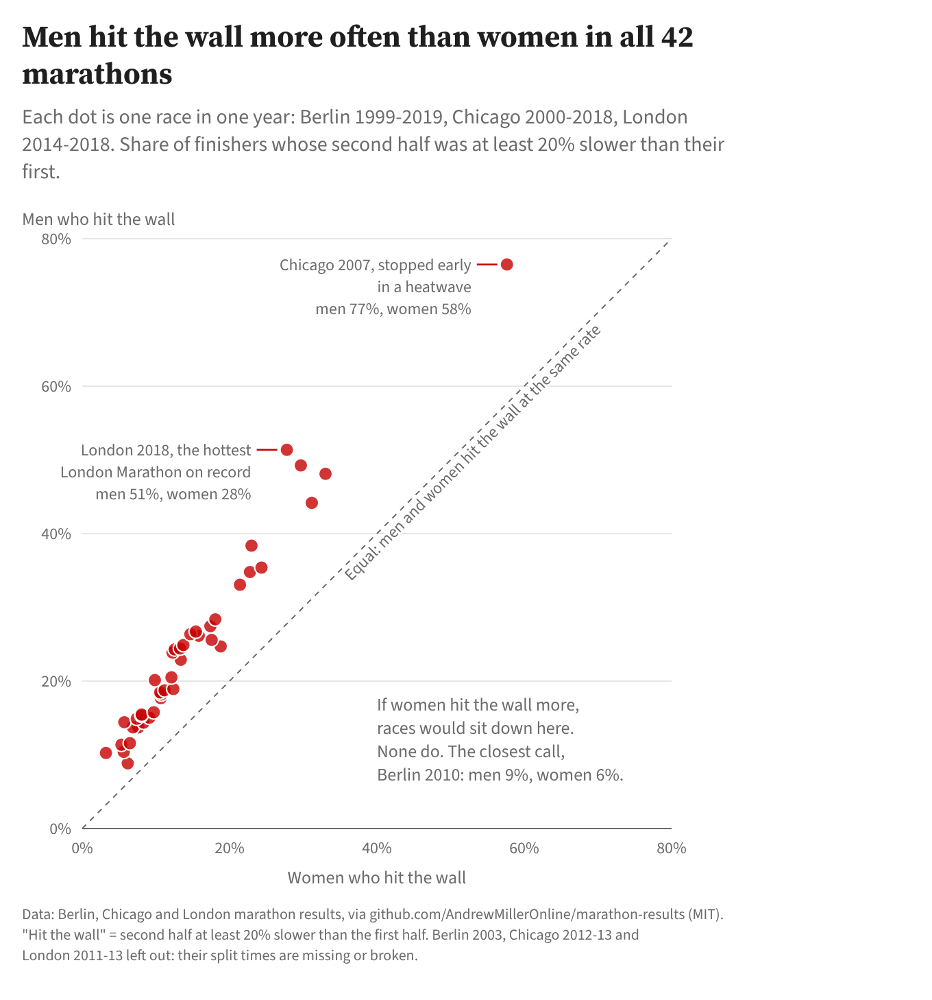
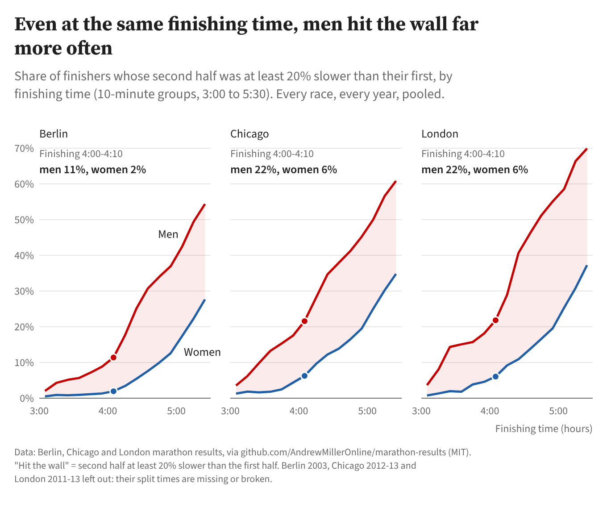
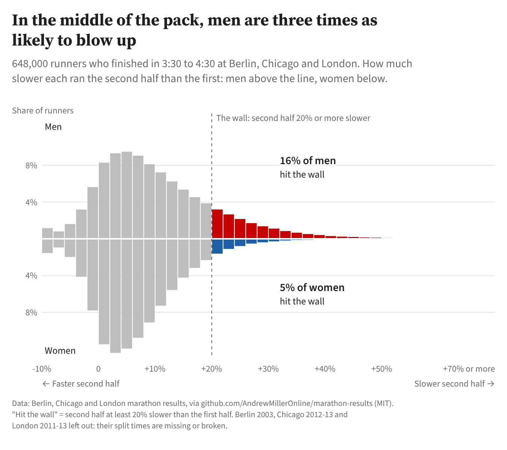

Working paper · Draft
Who hits the wall? Sex differences in late-race slowing among 1.4 million marathon finishers
Abstract
Marathon runners call a sudden collapse in pace late in a race “hitting the wall”. Earlier studies suggest that men slow down more than women in the second half of a marathon. This paper asks how consistent that difference is, and how large. It uses public results for 1,426,503 finishers of 42 Berlin, Chicago and London marathons held between 1999 and 2019, plus detailed split times for 31,683 finishers of the 2014 Boston Marathon. A runner was counted as hitting the wall if their second half took at least 20% longer than their first.
Overall, 23.8% of men and 17.0% of women hit the wall. Men had the higher rate in all 42 races, and the difference was statistically significant in every race on its own. The gap was wider when runners with similar finishing times were compared. Among the 648,059 finishers who took between 3:30 and 4:30, 16.1% of men hit the wall against 5.3% of women, about three times the rate. The result held when the 20% cut-off was moved anywhere from 10% to 30%. It also held in Boston under a pace-based definition: by 40 km, 40.0% of men and 9.8% of women finishing in 3:30 to 4:00 were running at least 25% slower than their early pace.
The typical man and the typical woman slowed by about the same amount, around 9–10%. The difference lies in how many runners slow dramatically, and most men still do not: 84% of men in the middle of the field ran their second half within 20% of their first.
1. Introduction
“Hitting the wall” is the name runners give to a sudden, severe slowing late in a marathon, usually after about 20 miles (32 km). Its main physiological cause is thought to be the depletion of carbohydrate stores in the muscles and liver. Rapoport (2010) modelled this and estimated that more than two in five marathon runners are at risk of severe, performance-limiting glycogen depletion, depending on factors such as muscle mass and running intensity.
Whether a runner reaches that point depends partly on pacing. Smyth (2018) analysed 1.7 million recreational marathon performances and found that starting too fast was costly, and that women paced more evenly than men. Deaner, Carter, Joyner and Hunter (2015) examined 91,929 finishers of 14 US marathons in 2011 and found that men slowed by 15.6% in the second half on average, against 11.7% for women. They also found that men were about three times as likely as women to slow by 30% or more. Hubble and Zhao (2016) used runners’ own predicted finishing times from the 2013 Houston Marathon and found that men overestimated their ability relative to women, and slowed more in the later stages of the race. Studies that model the wall directly from split times report the same direction: Smyth (2021) found that 28% of male and 17% of female recreational runners hit the wall, while noting that the effect sizes were small (see also Berndsen, Lawlor & Smyth, 2020).
One difficulty in comparing men and women is that, on average, they finish in different times. Any difference in the rate of hitting the wall could reflect differences in speed or ability rather than in pacing. This paper therefore asks three questions:
- Do men hit the wall more often than women, and is the difference consistent across races and years?
- Does the difference remain when men and women who finished in the same time, in the same race, are compared?
- How sensitive is the result to the way hitting the wall is defined?
2. Data
2.1 Sources
All of the data are public results published by the race organisers and later collected into open repositories by third parties. Neither repository was created for research, and neither has been formally validated.
- Berlin, Chicago and London. Results were taken from the marathon-results repository (AndrewMillerOnline, n.d.), released under the MIT licence. It contains one row per finisher, with sex, finishing time, and a half-way split for each race and year. The repository’s own notes say the data were gathered from the races’ timing websites and have not been cleaned.
- Boston 2014. Results were taken from the bostonmarathon repository (llimllib, 2014), which collected the Boston Athletic Association’s published results. For 2014 it contains one row for each of 31,984 finishers, with sex, finishing time, and cumulative splits at 5, 10, 20, 25, 30, 35 and 40 km, plus the half-way point.
No data on runners who started but did not finish are available, so all results describe finishers only.
2.2 Races included
Table 1 shows how the analysed sample was reached. Three groups of race-years were excluded as a whole after inspection:
- London 2010–2013: sex labels were unreliable, with names clearly mismatched to the recorded sex.
- Berlin 2003: recorded half-way times were inconsistent with the 20 km and 25 km splits.
- Chicago 2012 and 2013: no half-way times were recorded.
In the London file, rows for 2015–2018 are shifted one column to the right relative to the header. This was corrected by reading the half-way and finishing times from the shifted positions.
| Step | Rows |
|---|---|
| Rows in source files | 1,647,579 |
| Excluded: London 2010–2013 | 110,000 |
| Excluded: Berlin 2003 | 30,709 |
| Excluded: Chicago 2012–2013 | 76,358 |
| Rows in the 42 included races | 1,430,512 |
| Dropped: missing sex, half-way or finishing time | 3,575 |
| Dropped: implausible times (finish under 2:00 or over 8:00; second half more than 50% faster or 300% slower than the first) | 434 |
| Finishers analysed | 1,426,503 |
The 42 races comprise 20 editions of Berlin (647,465 finishers), 17 of Chicago (587,645) and 5 of London (191,393). Of the analysed finishers, 950,329 were men and 476,174 were women (33.4%).
For Boston 2014, 297 of the 31,984 finishers lacked at least one split and 4 had implausible values, leaving 31,683 (17,492 men and 14,191 women).
3. Methods
3.1 Defining “hitting the wall”
The wall has no agreed measurement, so it has to be operationalised. Two definitions were used, chosen to suit the splits available.
- Second-half definition (Berlin, Chicago, London). A finisher hit the wall if their second half took at least 20% longer than their first half: (finish time − half-way time) / half-way time − 1 ≥ 0.20. This uses the only split available in every race. It cannot tell when in the second half the slowing happened.
- Split definition (Boston 2014). Each runner’s baseline is their own average pace from 5 to 20 km. A runner is “in the wall” at a given distance if their current pace is at least 25% slower than that baseline. At 40 km, current pace was interpolated between the 35–40 km pace and the pace from 40 km to the finish, the same calculation the interactive replay uses. This is close to the definition used by Smyth (2021), which required a slowdown of at least 25% sustained for 5 km or more after 20 km.
3.2 Statistical analysis
- Rates. For each group, the share who hit the wall is reported with a 95% Wilson score confidence interval (Wilson, 1927).
- Comparisons. Men and women were compared with Pearson’s chi-squared test on the 2 × 2 table, with the risk ratio (RR), the odds ratio (OR) with a 95% confidence interval, and the phi coefficient (φ) as an effect size.
- Consistency across races. Each of the 42 races was tested separately, with a Bonferroni-corrected threshold of p < .05 / 42. A one-sided sign test asked how likely it would be for men to have the higher rate in every race if the two sexes were equally likely to hit the wall.
- Same finishing time. To compare like with like, finishers were stratified by race and by 10-minute finishing-time band, giving 1,287 strata that contained both sexes. A Mantel–Haenszel common odds ratio was estimated across strata (Mantel & Haenszel, 1959). As a check, a binomial logistic regression was fitted to counts aggregated by sex, race and finishing-time band, with race and band as fixed effects. Its predictions were used to give standardised rates: the expected share hitting the wall if every finisher were treated as a man, and then as a woman.
- Sensitivity. The second-half analysis was repeated with thresholds of 10%, 15%, 25% and 30%.
The analysis was run in Python with pandas, SciPy and statsmodels. The script that produces every number in this paper is published alongside it (see Data and code).
4. Results
4.1 Boston 2014: watching the wall arrive
Figure 1 replays the 2014 Boston Marathon runner by runner. Each dot is one finisher, placed by how far their current pace is from their own 5–20 km pace. To keep the animation readable, it shows a random sample of 3,000 men and 3,000 women.
By 40 km, 34.7% of men (95% CI 34.0–35.4) and 16.5% of women (15.9–17.1) in the full field were running at least 25% slower than their early pace (RR 2.11, OR 2.69, 95% CI 2.55–2.84; χ²(1) = 1,334, p < .001; φ = 0.21). Among finishers who took between 3:30 and 4:00, the figures were 40.0% of men (n = 3,922) against 9.8% of women (n = 4,803): RR 4.09, OR 6.16 (95% CI 5.49–6.90). In the replay’s sample, the equivalent figures are 36.5% and 9.9%.
4.2 Forty-two more races
Across all 1,426,503 finishers in Berlin, Chicago and London, 23.8% of men (95% CI 23.7–23.9) and 17.0% of women (16.9–17.2) ran the second half at least 20% slower than the first. That gives RR 1.40 and OR 1.52 (95% CI 1.51–1.53); χ²(1) = 8,594, p < .001. The effect size was small (φ = 0.08).
The difference was strikingly consistent (Figure 2). Men had the higher rate in all 42 races (sign test, p = 2.3 × 10⁻¹³), and the difference was significant in every race on its own after Bonferroni correction (largest p = 1.9 × 10⁻¹³). The risk ratio ranged from 1.31 (London 2015) to 3.17 (Chicago 2000), with a median of 1.70. The closest race was Berlin 2010, at 8.8% of men against 6.2% of women.
Rates varied widely between races: from 10.2% of men and 3.2% of women in Chicago 2000, to 76.5% and 57.6% in Chicago 2007, a race halted part-way through because of heat. When the overall rate was high, the ratio between the sexes tended to be smaller, although the gap in percentage points was larger.

4.3 Same race, same finishing time
Men and women finish in different times on average, so Figure 3 compares them within the same finishing-time band. At every time from 3:00 to 5:30, in all three cities, men were more likely to hit the wall. Among finishers who took 4:00 to 4:10, 21.6% of men and 6.3% of women hit the wall in Chicago, 21.8% and 6.1% in London, and 11.4% and 1.9% in Berlin.

Adjusting for race and finishing time made the difference larger, not smaller. The Mantel–Haenszel odds ratio across 1,287 race-by-time strata was 3.83 (95% CI 3.79–3.88). The logistic regression gave almost the same estimate: OR 3.78 (95% CI 3.74–3.82). Standardised to the whole sample’s mix of races and finishing times, the predicted rates were 28.4% if everyone were treated as a man and 12.3% if everyone were treated as a woman. The crude comparison understates the gap because women are over-represented among slower finishers, where hitting the wall is more common for everyone.
4.4 The middle of the pack
Figure 4 shows the full distribution of second-half slowing for the 648,059 finishers who took between 3:30 and 4:30. Most runners of both sexes slowed a little. The median slowdown across all finishers was 9.9% for men and 9.1% for women, so the typical runner behaved much the same regardless of sex. The difference is in the tail. In this group, 16.1% of men (95% CI 16.0–16.2; n = 463,989) and 5.3% of women (5.2–5.4; n = 184,070) slowed by 20% or more: RR 3.04, OR 3.43 (95% CI 3.36–3.51); χ²(1) = 13,596, p < .001; φ = 0.14. Put the other way round, 83.9% of men in the middle of the pack did not hit the wall.

4.5 Sensitivity to the definition
Table 2 repeats the analysis with different thresholds. Men had the higher rate at every threshold, overall and in the middle of the pack, and in all 42 races at every threshold. The stricter the definition, the larger the ratio between men and women. Together with the 25% split-based definition used for Boston (Section 4.1), this suggests the finding does not depend on one arbitrary cut-off.
| Second half slower by at least | Men, all | Women, all | Men, 3:30–4:30 | Women, 3:30–4:30 | Ratio, 3:30–4:30 | Races with men higher |
|---|---|---|---|---|---|---|
| 10% | 49.6% | 46.6% | 43.4% | 27.9% | 1.6 | 42 / 42 |
| 15% | 34.9% | 29.5% | 27.1% | 12.8% | 2.1 | 42 / 42 |
| 20% | 23.8% | 17.0% | 16.1% | 5.3% | 3.0 | 42 / 42 |
| 25% | 15.7% | 9.4% | 9.1% | 2.2% | 4.2 | 42 / 42 |
| 30% | 9.9% | 5.1% | 5.0% | 0.9% | 5.5 | 42 / 42 |
5. Discussion
In 1.4 million finishes across 42 races and two decades, men were more likely than women to slow dramatically in the second half of the marathon. They were more likely in every race, under every threshold tested, and under a second, split-based definition in Boston. The crude difference is modest (23.8% against 17.0%), and close to the 28% against 17% reported by Smyth (2021) with a different method. Once men and women with the same finishing time in the same race are compared, however, the odds of hitting the wall are almost four times higher for men.
The data show that the sexes differ, not why. Three explanations from the literature fit the pattern, and they are not mutually exclusive. The first is pacing decisions: men tend to start faster relative to their ability (Smyth, 2018) and to overestimate what they can do (Hubble & Zhao, 2016). Deaner et al. (2015) suggested that sex differences in decision-making, such as a greater male tendency to take risks, are a possible contributor. The second is physiology: differences in fuel use and glycogen storage could change how close a given pace takes a runner to depletion (Rapoport, 2010). The third is training and experience, which this data set cannot observe. The finding that the median runner of each sex slowed by a similar amount, while the tails differ sharply, is more consistent with a minority of men making riskier pacing choices than with a uniform physiological difference. This is an interpretation, not a test.
The size of the effect also needs keeping in proportion. Even where the gap is largest, most men do not hit the wall: 84% of men in the middle of the pack ran a second half within 20% of their first. A reliable group difference is not a description of every individual.
6. Limitations
- Observational data. The analysis describes associations. It cannot separate pacing choices from physiology, training, age, or experience, none of which are recorded consistently.
- Conditioning on finishing time. Finishing time is partly a consequence of hitting the wall: a runner who collapses finishes later than they otherwise would. Comparing men and women “with the same finishing time” therefore compares runners who may have had different underlying abilities. The adjusted estimates should be read as descriptive comparisons within time bands, not as estimates of a causal effect of sex.
- A crude measure. The second-half definition uses one split. It counts runners who slowed steadily as well as those who collapsed late, and it misses walls that began before half-way. The Boston analysis, with 5 km splits, points the same way, but it covers only one race.
- Finishers only. Runners who stopped are absent. If men and women drop out at different rates after hitting the wall, the rates here are biased in an unknown direction.
- Data quality. The data were scraped by third parties from timing websites and have not been validated. Three groups of race-years were excluded for obvious errors, and less obvious errors may remain. Sex is recorded as a binary category by the organisers.
- Weather and course. Conditions were not modelled. The highest rates came from races reported as hot, and the ratio between the sexes was smaller in those races. Race fixed effects absorb the average conditions of each race, but not variation within a race.
- Multiple testing and very large samples. With samples this size, almost any difference is statistically significant. The effect sizes and the consistency across races carry more weight than the p-values.
7. Conclusion
Men hit the wall more often than women in every one of 42 big-city marathons. When runners who finished in the same time are compared, the difference grows to roughly a three- to four-fold difference in risk. Most runners of both sexes slow by a similar, modest amount. The difference lies in how many slow dramatically. Whether that reflects riskier pacing decisions, physiology or something else cannot be settled with results data alone. Linking split times to runners’ stated goals, past performances or race-day choices would be the natural next step.
Data and code
- Berlin, Chicago and London results: https://github.com/AndrewMillerOnline/marathon-results (MIT licence).
- Boston 2014 results: https://github.com/llimllib/bostonmarathon
- The analysis script (analysis.py), its full output (results.json) and a race-by-race table (race_by_race.csv) are published with this paper. Running the script on the two repositories reproduces every number reported here. An R notebook (wall-spot-check.Rmd) that downloads the raw files and recomputes the headline numbers is published alongside it.
Author’s note
This working paper was written by Claude, an AI assistant made by Anthropic, with BDF. Claude wrote and ran the analysis code and drafted the text. BDF chose the question and the charts, and checked the code, the statistics, the references and the drafts of the paper. BDF also recomputed the headline numbers independently from the raw race data in R (see Data and code).
References
AndrewMillerOnline. (n.d.). marathon-results [Data set]. GitHub. https://github.com/AndrewMillerOnline/marathon-results
Berndsen, J., Lawlor, A., & Smyth, B. (2020). Exploring the wall in marathon running. Journal of Sports Analytics, 6(3), 173–186. https://doi.org/10.3233/JSA-200354
Deaner, R. O., Carter, R. E., Joyner, M. J., & Hunter, S. K. (2015). Men are more likely than women to slow in the marathon. Medicine & Science in Sports & Exercise, 47(3), 607–616. https://doi.org/10.1249/MSS.0000000000000432
Hubble, C., & Zhao, J. (2016). Gender differences in marathon pacing and performance prediction. Journal of Sports Analytics, 2(1), 19–36. https://doi.org/10.3233/JSA-150008
llimllib. (2014). bostonmarathon [Data set]. GitHub. https://github.com/llimllib/bostonmarathon
Mantel, N., & Haenszel, W. (1959). Statistical aspects of the analysis of data from retrospective studies of disease. Journal of the National Cancer Institute, 22(4), 719–748.
Rapoport, B. I. (2010). Metabolic factors limiting performance in marathon runners. PLoS Computational Biology, 6(10), e1000960. https://doi.org/10.1371/journal.pcbi.1000960
Smyth, B. (2018). Fast starters and slow finishers: A large-scale data analysis of pacing at the beginning and end of the marathon for recreational runners. Journal of Sports Analytics, 4(3), 229–242. https://doi.org/10.3233/JSA-170205
Smyth, B. (2021). How recreational marathon runners hit the wall: A large-scale data analysis of late-race pacing collapse in the marathon. PLoS ONE, 16(5), e0251513. https://doi.org/10.1371/journal.pone.0251513
Wilson, E. B. (1927). Probable inference, the law of succession, and statistical inference. Journal of the American Statistical Association, 22(158), 209–212.